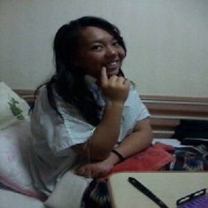
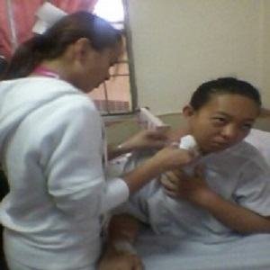
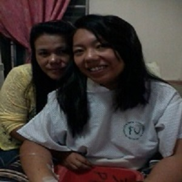
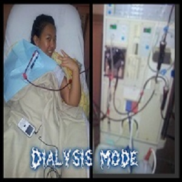
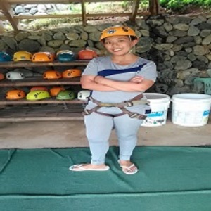
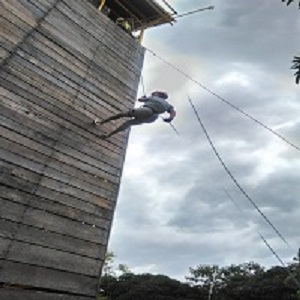
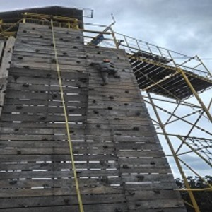

As quoted "There's a rainbow always after a rain."
Upon high school graduation, I worked at the Office for Administration for the SPES program so I learned about the City Disaster Coordinating Council - Disaster Operation Center. I volunteered since then, and tutored at Monol International while in college, but due to circumstances I stopped at 3rd year. On January 2011, I was informed by the offie (City Disaster Risk Reduction and Management Council - Disaster Operation Center Baguio) that they employed me as Job Order.
Since then,I worked hard and supported my sisters' allowance while she is attending college and taking BS - Tourism. I was bored and not contented, so I had part time job as an online tutor for few months in 2012 and a cafe bar manager on July 2013.
During those time, I lacked sleep, rest and proper diet until August so I quit, but it's too late because I started feeling unwell. Every week I had fever, terrible cramps, loss of appetite and I felt so tired even though I just woke up. I even had difficulty of breathing while trying to inspet a landslide case at Dontogan during a typhoon. My colleagues told me to see a doctor, so when I got home from the night duty, my uncle (post transplant patient) and grandma insisted to see a doctor. At first, she told me to have meds for UTI and anemia but I need to go back the next morning for blood test and whole abdomen ultrasound. Of course, the result is a bit shocking 'cause she asked me to choose which hospital I prefer for admission and a nephrologist.
The Result Is A Shock
I was admitted at the Pines Dotors Hospital that night and Dr. Luspian came and explained that I need to undergo an emergency hemodialysis because my case is the same as my father and my uncles. I just went thru the procedures without letting it sink in my mind.
My mom does not believe it so we had our second opinion at the National Kidney and Transplant Institute, but worst is that I needed to have a kidney transplant or a lifetime three times a week dialysis. What now?
Faith and Prayer
Being a hemodialysis patient for more than three years, I feel more challenged because I am a candidate for kidney transplant since 2014, but due to some circumstances, it is not happening. While waiting for my third donor, I was onced hospitalized way back 2014 due to pneumonia and on 2015 due to chest pain and a scheduled angiogram. I was somewhat scared because of the second one, I thought I was going to die, but my faith and prayer is stronger so I am still here struggling to live normally. The lesson here is family should be the number one supporter of the patient. In addition, the doctors' advice is "family members MUST undergo an annual laboratory test to prevent any unwanted illness." My personal advice:
Have a healthy lifestyle, atleast 8 hours of sleep and drink plenty of water while you still can, 'cause if you're hooked in that machine,it's GAMEOVER.   
  
Do what you want while you still can.